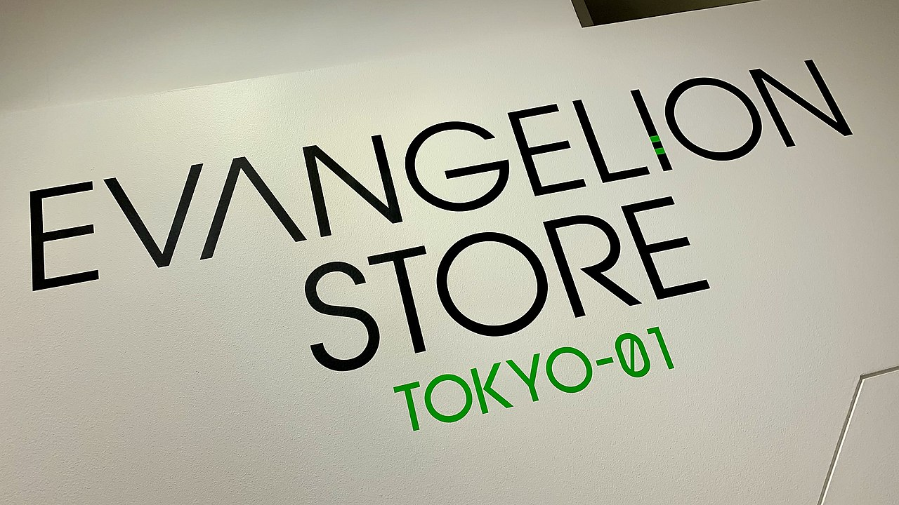
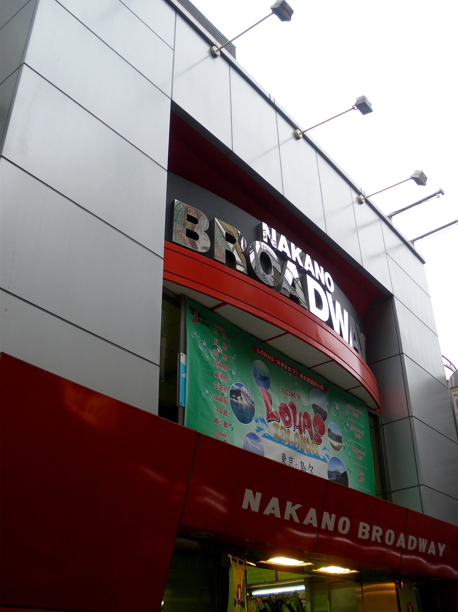
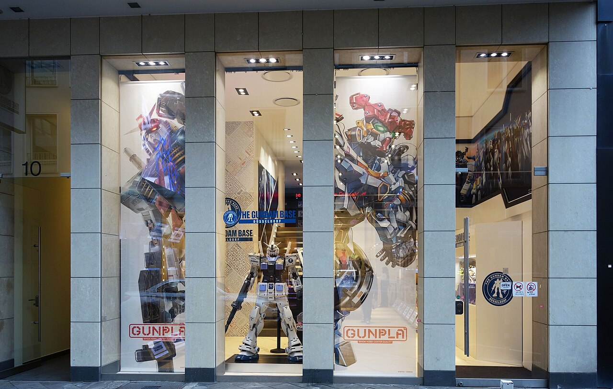

Akihabara is the epicenter of anime, manga, and collectible culture. Whether you're a fan or just curious, the sheer scale of it, whole buildings devoted to one hobby, is a sight in itself.



The flagship of Japan's biggest anime-goods chain, floors of manga and merch.
A treasure cave of used manga, vintage figures, and collectibles.
High-end figures and models, from beginner kits to display pieces.
A bonus district a short train away, an entire mall of collector shops.